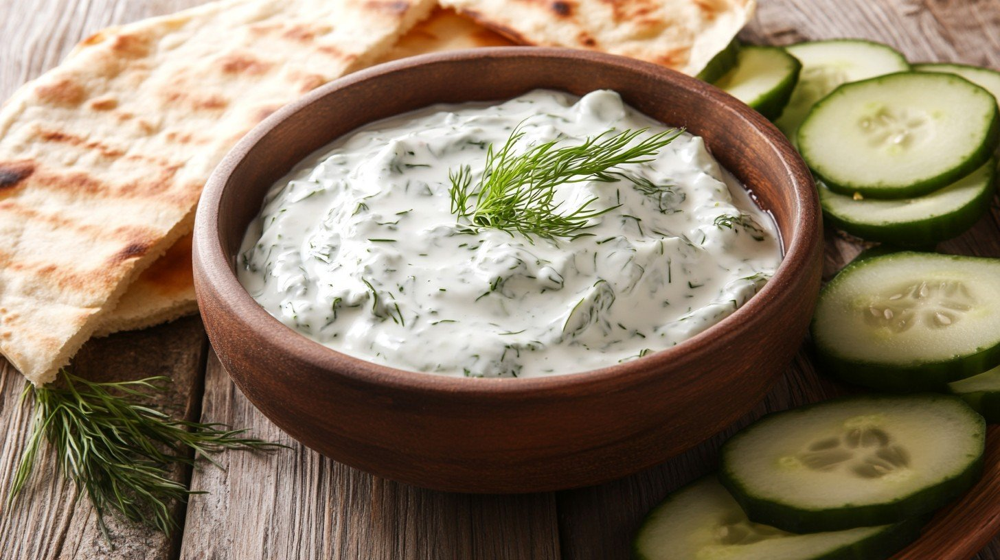

Tzatziki

Photo by Stockcake (CC0 1.0)
Description
Cool, creamy, and irresistibly fresh - tzatziki is the heart of Mediterranean flavour.
Made with thick Greek yoghurt, crisp cucumber, and garlic, this simple dip (or sauce) transforms any dish into a refreshing delight. Whether you’re dipping warm pita, drizzling it over grilled meats, or spooning it beside roasted veggies, tzatziki brings a perfect balance of tang and chill to every bite.
Ingredients
- 1/2 large cucumber
- 1 1/2 cups plain full-fat Greek yoghurt
- 2 large garlic cloves, finely minced
- 2 tablespoons extra virgin olive oil
- 1 tablespoon white vinegar
- 1/2 teaspoon salt
- 1 tablespoon fresh dill, finely chopped
Method
- Grate the cucumber & drain through a fine sieve overnight in the fridge
- Combine the yoghurt, garlic, oil, vinegar, & salt in a large bowl. Cover & refrigerate overnight
- Add the fresh dill to the cucumber and transfer to the yoghurt mixture. Stir to combine
- Serve chilled
Home